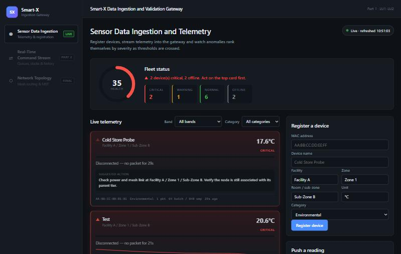

Data pipeline · 2026
Smart-X: IoT data ingestion & anomaly detection
A gateway that ingests live telemetry from a simulated fleet of ESP32 sensors, validates every packet and ranks anomalies by severity in real time. The dashboard shows fleet health at a glance and suggests the next action for each failing device.
- Real-time ingestion, with dropouts and threshold breaches injected on purpose
- Recursive validation of the Facility → Zone → Room hierarchy, with cycle detection
- Encrypted file attachments, Docker Compose, and 64 passing xUnit tests in CI